Indicatrix
Spectral path tracer and faceting-design CAD for cut gemstones
Indicatrix is a spectral path tracer: it traces light through cut gemstone geometry using hero-wavelength spectral sampling with polarization and birefringence, evaluating the refractive index per wavelength from Sellmeier and Cauchy dispersion data rather than a fixed RGB approximation. The transport physics runs on the CPU and, optionally, as a GPU compute kernel that is checked against the CPU reference by a tiered equivalence harness.
It is built for previewing faceting designs before cutting, comparing
how different gem materials render the same cut, and producing
reference-quality still renders. Designs come from GemCAD-style
.asc cutting schedules or from Indicatrix's own faceting
editor.
Status: the renderer is usable today. The faceting CAD (design editing, solving, optimizing) is beta and under active development — see section 5. Indicatrix is MIT licensed.
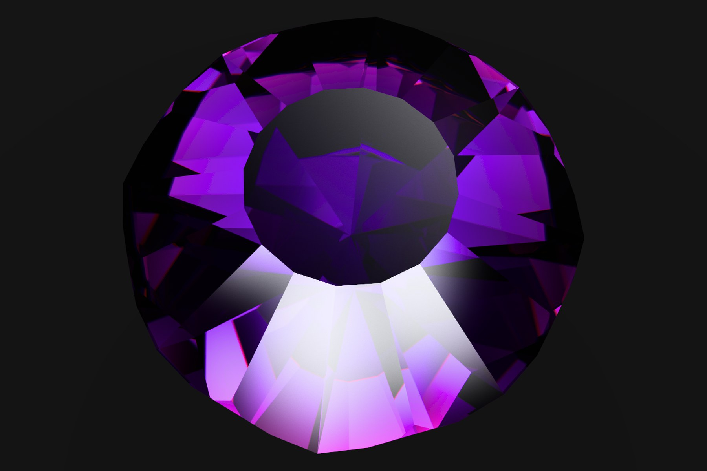
1What is modelled
| Aspect | Method | Notes |
|---|---|---|
| Sampling | Hero-wavelength spectral sampling, 8 channels per path | One hero wavelength plus 7 rotated companions per ray (NUM_CHANNELS, crates/indicatrix/src/optics/raytracer/mod.rs) |
| Dispersion | Sellmeier / Cauchy dispersion per material | 32 built-in materials, each with a cited or derived fit (crates/indicatrix/src/optics/materials.rs) |
| Polarization | Stokes vectors and Mueller matrices at every interface | Includes total-internal-reflection phase retardation (optics/polarization.rs, optics/birefringence.rs) |
| Anisotropy | Uniaxial and biaxial crystal optics | Ordinary/extraordinary ray splitting and Poynting walk-off (optics/birefringence.rs, GPU port in renderer/gpu/transport_check/eigenmodes_uniaxial.rs) |
| Absorption | Pleochroic, per-direction absorption tensors | Beer–Lambert law along the ray chord (optics/raytracer/absorption.rs) |
| Geometry | Convex half-space intersection | No triangle mesh; facets are planes (geometry/plane.rs, simd/slab.rs) |
| Colour | CIE 1931 tabulated colour-matching functions to XYZ, then tone mapped | color/mod.rs, color/gamut.rs |
| Inclusions | Henyey–Greenstein volumetric scattering | Optional per-material silk/haze scattering parameters, defined in optics/materials.rs and consumed by the Henyey–Greenstein estimator in optics/raytracer/scattering.rs |
2Verification
The optional GPU compute kernel is a WGSL port of the same transport
physics the CPU path runs. It is checked against the CPU reference by a
tiered equivalence harness in crates/indicatrix/src/renderer/gpu:
Tier 1 checks bit-exact integer and RNG state; Tier 2 checks individual
ported functions (Sellmeier evaluation, Fresnel, ray-plane intersection,
and more) against a per-function ULP budget; Tier 3 does a statistical
comparison (Welford mean/variance) of full rendered images between the
two backends. A separate furnace check drives the same hero-wavelength/
CIE-CMF-integration pipeline (no gemstone geometry) against a uniform,
wavelength-independent radiance environment and checks that both the
CPU reference and the GPU port converge to the analytically computable
true value within their own ULP budget.
- Tier 1 — bit-exact RNG and integer state (
renderer/gpu/rng_check.rs) - Tier 2 — per-function ULP budgets (
renderer/gpu/ulp.rs) - Tier 3 — statistical image comparison, CPU vs. GPU (
renderer/gpu/estimator_check/image_comparison.rs) - Furnace anchor — CPU/GPU convergence against an analytically-computed target for the CMF-integration pipeline (
renderer/gpu/furnace_check.rs) - Shader validation — every WGSL unit is parsed with
nagainrenderer/gpu/shader_validation_tests.rs
3Renders
{kind=link}
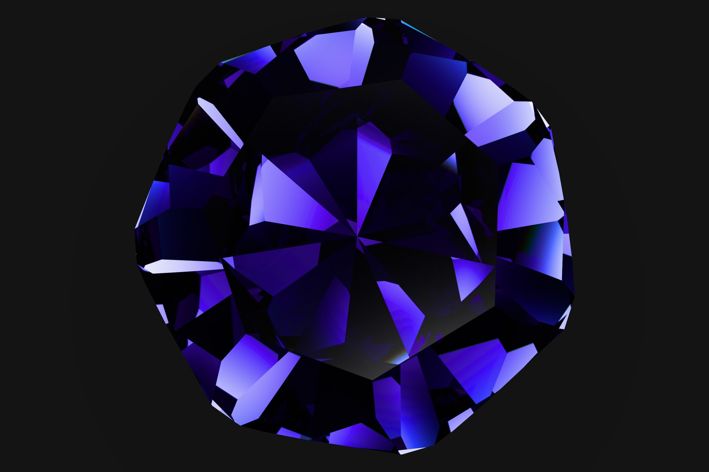
Look at the dispersion fringes along the crown facet edges — continuous colour, not banded RGB.
{kind=link}
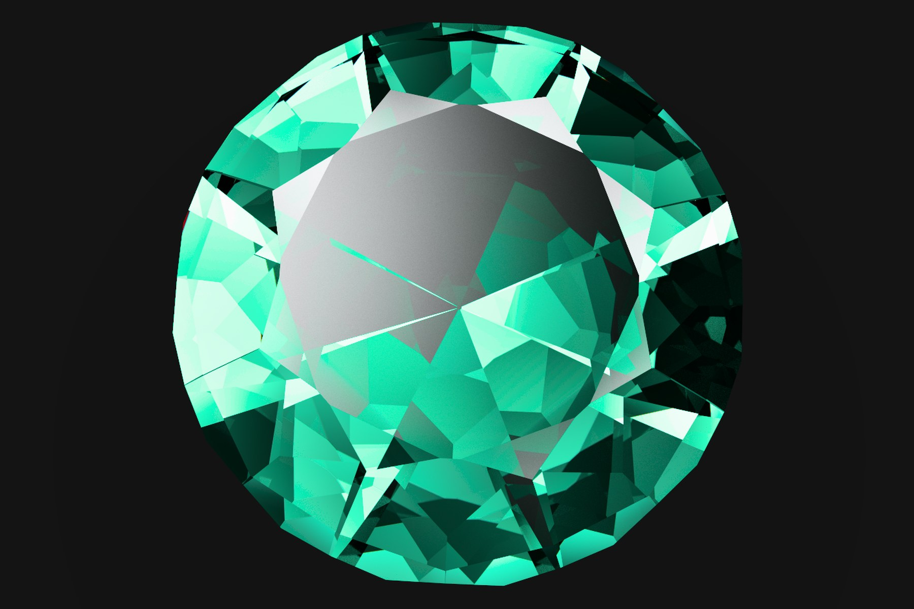
Look at the extinction areas near the pavilion where pleochroic absorption darkens the stone.
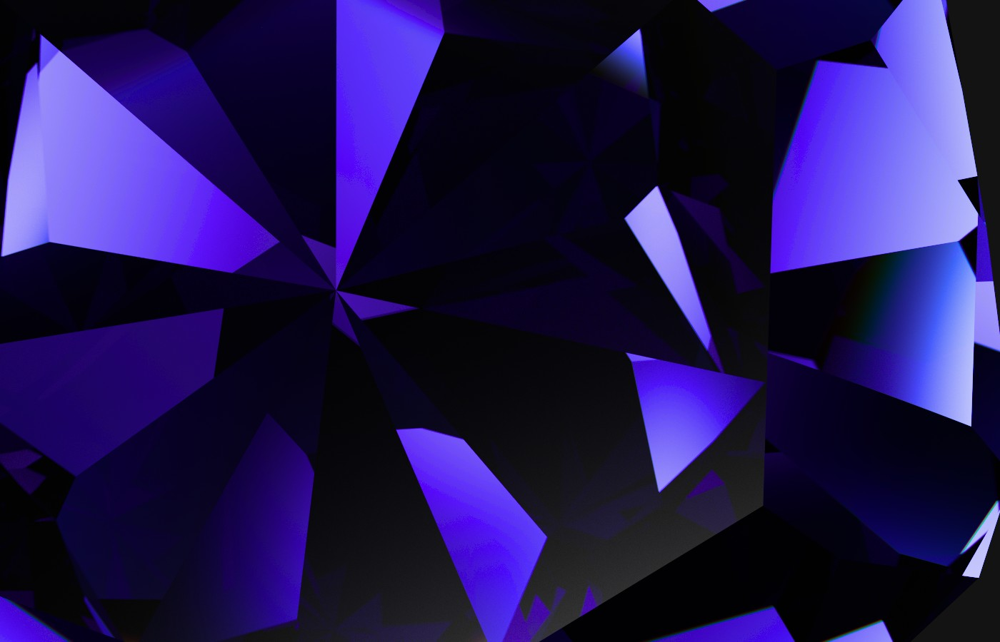
Look at the per-pixel noise level at this sample count — no denoiser applied.
4The studio
indicatrix-cut is the desktop application: a design library
on the left, a live 3D viewport on the right. The library is a local
SQLite database (no account) searchable by shape, index gear, facet
count, and length/width ratio; it can also switch to browsing a
remote worker's design catalogue over the same network connection
used for render offload (see section 7).
The viewport renders either a fast solid preview or the full path
tracer, with orbit camera controls, material selection, lighting
presets, and support for loading custom HDR environment maps. Master
stills export up to 8192 × 8192 pixels at up to 32 768 samples per pixel
(MAX_EXPORT_DIM, MAX_EXPORT_SPP in
apps/indicatrix-cut/src/bridge/export_thread/params.rs).
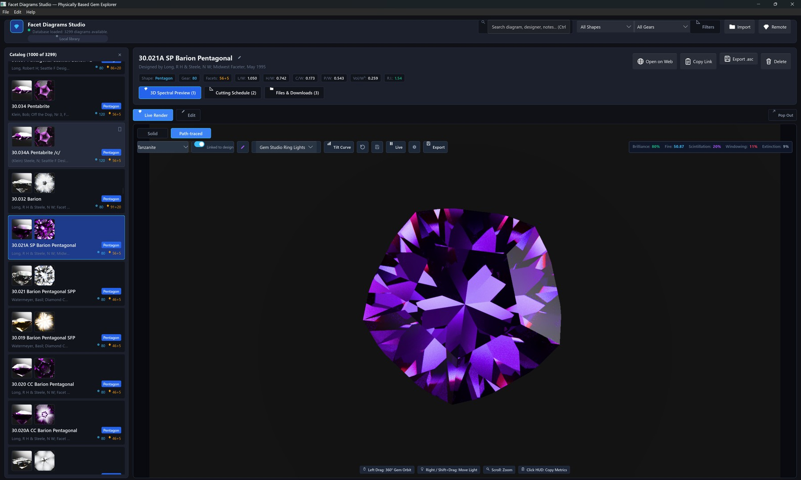
{kind=link}
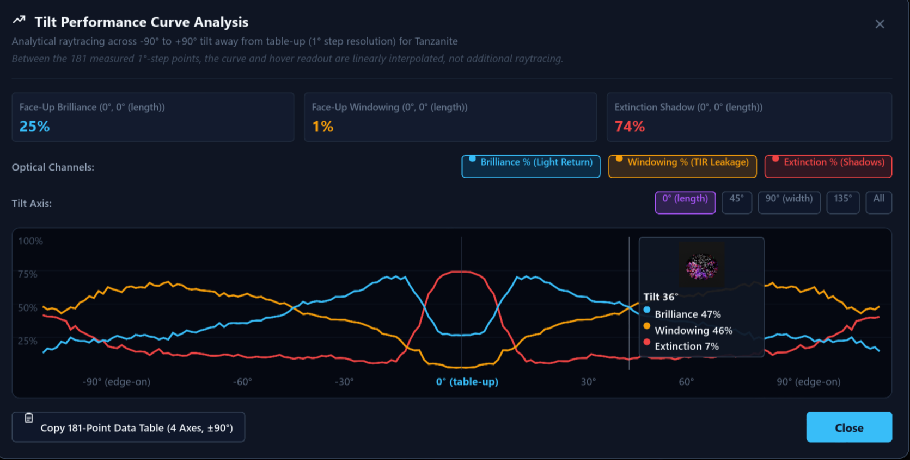
{kind=link}
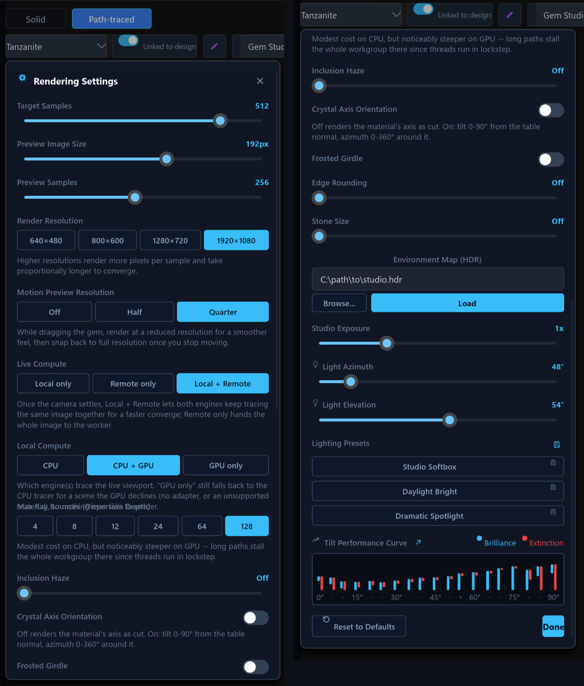
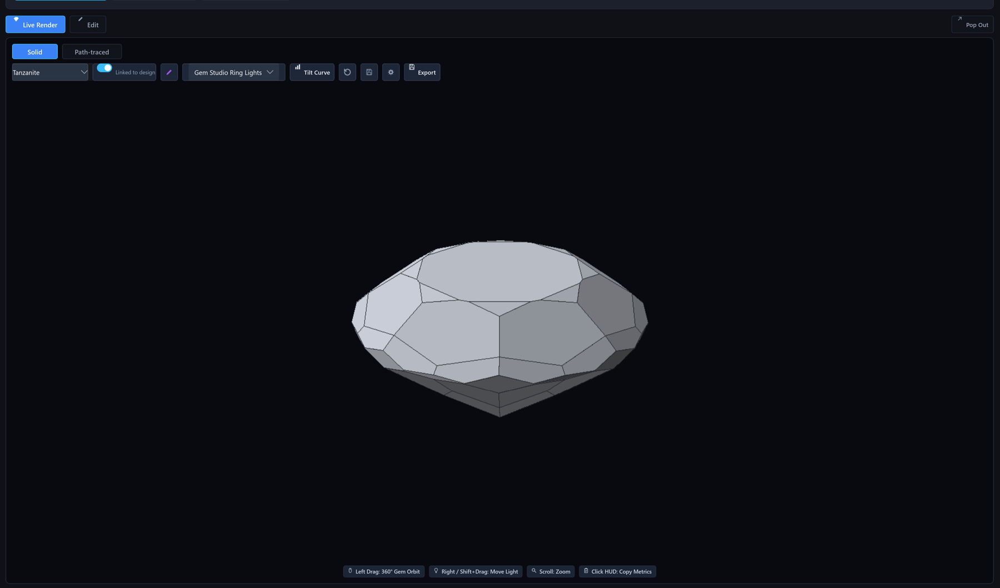
5Faceting CAD (beta)
The faceting CAD is in beta and under active development. Solving, optimising and export work on the designs in the bundled catalogue, but the editor's interaction model is still changing and results should be checked against a conventional CAD before cutting.
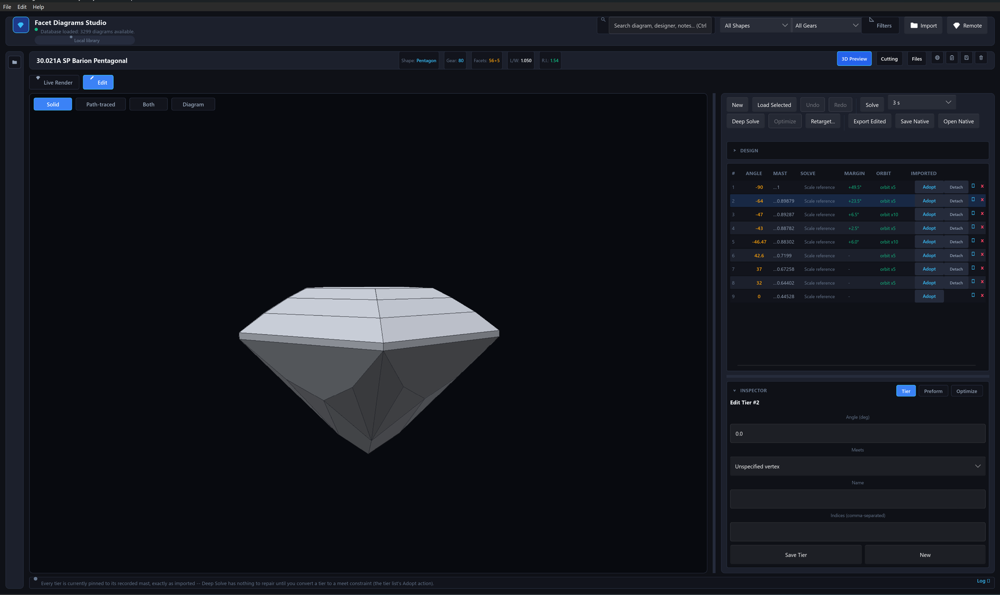
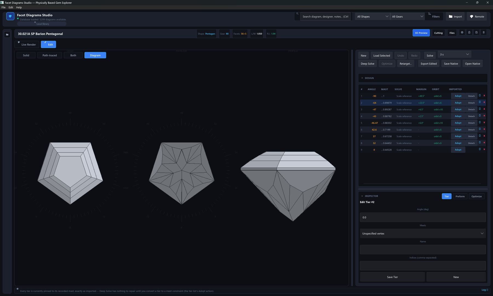
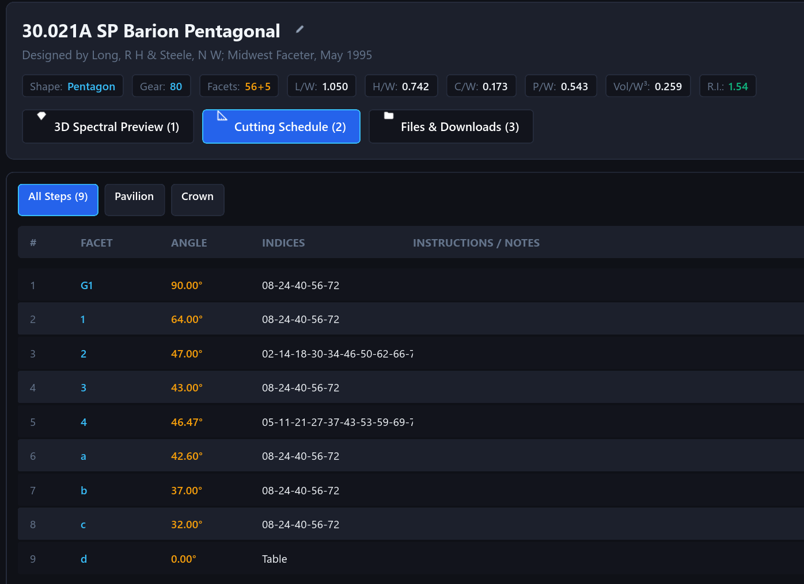
A cutting schedule is treated as a constraint graph rather than a static
list of numbers. The meet-point solver (crates/indicatrix/src/geometry/meet_solver)
resolves each facet's cutting depth from its meet constraints in
dependency order, and can anchor an otherwise-unconstrained schedule
against a design's own printed C/W/P/W
proportions (meet_solver/anchors.rs). On top of the solver,
indicatrix-cut-core provides rough preforms
(preform.rs), a coordinate-search angle optimizer
(optimize/), and manufacturability checks — vanishing or
undersized facets, gear-quantization errors, out-of-order meets
(manufacturability/). Designs round-trip through GemCAD
.asc import/export and Indicatrix's own
.indicatrix.toml sidecar format
(crates/indicatrix-formats/src/native), which preserves
constraints and preforms that a plain .asc file cannot
express.
6Materials
Indicatrix ships 32 built-in gem materials in
crates/indicatrix/src/optics/materials.rs, each with a
dispersion fit either transcribed from a primary optical-constants
paper or derived from corroborated gemological reference values (the
source code documents which, per material). The chart below evaluates
a subset of these dispersion curves live in your browser; the full
table is on the materials page.
- Material
- Diamond (C)
- Crystal system
- Cubic (Isotropic)
- Optical character
- Isotropic
- n_D (589 nm)
- 2.4173
- Dispersion (n_F − n_C)
- 0.0440
- Abbe number (V_d)
- 55.3
- Birefringence (Δn)
- 0.0000 (none)
- Specific gravity
- 3.52
Exceptional brilliance and adamantine luster with intense fire. The reference isotropic gemstone.
7Distributed rendering
The viewport renders locally while the camera moves, then hands off
sample tracing to a remote indicatrix-worker once the
camera settles. Because each sample's contribution is additive and
order-independent, work is partitioned by sample-index range rather
than by screen tile, which avoids the load imbalance that tiling causes
on a gemstone (most of the frame is background, a few facets absorb
most of the bounce budget). The connection is mutual TLS 1.3
(rustls, TLS 1.2 compiled out) with one-time token
enrollment, so a new client can pair with a worker without a manual
certificate exchange. See the distributed
rendering page for the protocol and the indicatrix-worker
CLI.
8Workspace
| Crate | Kind | Description |
|---|---|---|
indicatrix |
library | A physically-based spectral gemstone renderer that turns GemCAD-style cutting schedules into rendered output. |
indicatrix-cut-core |
library | Editor-core library for a faceting cutting schedule: preform, tiers, undo/redo, and live solid validation. |
indicatrix-formats |
library | Readers and writers for gemstone faceting design file formats. |
indicatrix-vault |
library | SQLite-backed storage, data models, and local import/export for gemstone faceting design libraries. |
indicatrix-net |
library | Wire protocol for offloading indicatrix spectral ray samples to a remote render worker. |
indicatrix-cut |
app (desktop) | Desktop faceting-design editor: library browsing, spectral 3D rendering, material retargeting, and a solid inspection view. |
indicatrix-worker |
app (CLI / server) | Library server for an indicatrix-backed design catalogue; the optional worker feature adds render capacity, and render a one-shot scene-to-PNG CLI. |
indicatrix-web |
app (browser, WebGPU) | Browser build of indicatrix: upload a GemCAD .asc cutting schedule, get an interactive rendered stone. No design library, no remote worker, no database. |
9Getting started
# clone and build
git clone https://github.com/suitable-name/indicatrix.git
cd indicatrix
cargo run -p indicatrix-cut --release
# with the GPU compute kernel
cargo run -p indicatrix-cut --release --features gpu# scene.json is a serialized indicatrix-net SceneState
cargo run -p indicatrix-worker --features worker -- render \
--scene scene.json \
--out render.png \
--width 3840 \
--height 2160 \
--samples 8192
Rust edition 2024, rust-version = "1.95" (workspace
Cargo.toml). Windows and Linux are the platforms exercised
by this repository's own build scripts
(scripts/pgo-build.ps1, scripts/pgo-bolt-build.sh);
macOS is not currently tested.
10Status and limitations
- The faceting CAD (
indicatrix-cut-coreand the editor UI inapps/indicatrix-cut) is beta; its interaction model is still changing. indicatrix-webis an experimental WebGPU-only browser build with no CPU fallback and no design library — see its ownREADME.md.- The GPU compute path requires a wgpu-supported adapter with at least 11 storage buffers per shader stage (
MEGAKERNEL_STORAGE_BUFFERS,crates/indicatrix/src/renderer/gpu/context.rs); without one, rendering falls back to the CPU tracer. - macOS has not been tested.